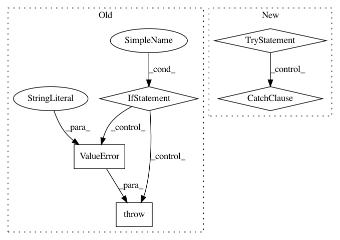

82f9e2358c35c5bbff8714280174617ba29cf92b,keras/engine/topology.py,,_collect_input_shape,#Any#,2418
Before Change
input_tensors = _to_list(input_tensors)
shapes = []
for x in input_tensors:
if hasattr(x, "_keras_shape"):
shapes.append(x._keras_shape)
else:
raise ValueError("Input tensor is not a Keras tensor:", x)
if len(shapes) == 1:
return shapes[0]
return shapes
After Change
input_tensors = _to_list(input_tensors)
shapes = []
for x in input_tensors:
try:
shapes.append(K.int_shape(x))
except TypeError:
shapes.append(None)
if len(shapes) == 1:
return shapes[0]
return shapes
In pattern: SUPERPATTERN
Frequency: 3
Non-data size: 5
Instances
Project Name: keras-team/keras
Commit Name: 82f9e2358c35c5bbff8714280174617ba29cf92b
Time: 2017-02-17
Author: francois.chollet@gmail.com
File Name: keras/engine/topology.py
Class Name:
Method Name: _collect_input_shape
Project Name: asyml/texar
Commit Name: af461df627ef660d1a71b6981dedb4e4b504ba9a
Time: 2017-09-25
Author: junxianh2@gmail.com
File Name: txtgen/modules/connectors/connectors.py
Class Name: StochasticConnector
Method Name: _build
Project Name: chainer/chainercv
Commit Name: 5e01619e1f495db4ce7201c1444a66fbf46059c4
Time: 2019-02-23
Author: ktns.87@gmail.com
File Name: chainercv/links/model/pickable_sequential_chain.py
Class Name: PickableSequentialChain
Method Name: pick